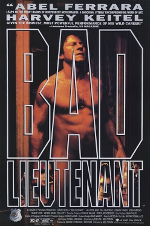

Abel Ferrara
1992
96 minutes
TITLE: Bad Lieutenant TEXT PLACEHOLDER 126
Harvey Keitel plays a corrupt druggie cop half-ass trying to solve a crime involving the sexual assault of a nun. This is one of the best and possibly most accurate sports gambling films of the last few decades. Pair this with any baseball film if you must. Perk your ears up every time the plot turns to baseball--it's the best part of the film.
Harvey Keitel does a lot of whining in this one. A lot of whining. It is impressively pathetic and unhinged. Your mother always taught you not to whine. "If you're going to cry, cry. But don't whine." Whining was a fast ticket to her bad side. A crying child might be worth comforting, but a whining child is being deliberately annoying. She knew that whining tears were false tears, and she would always ominously offer to give you a reason to cry if you persisted. You learned to respect this since it was obvious she could see through what you were doing. Not once did she threaten this when you were honestly crying for any reason. Harvey Keitel's numerous mini-tantrums accompanied by self-pitying whining sessions are incredible. It is a man-child portrayal truly worthy of the big screen.
You're also going to get to see Harvey being an enormous creep and make two women he pulls over watch while he jerks off. They really are not kidding about the "bad" label on "bad lieutenant". His character is thoroughly repulsive in a delightful way. You can't look away. This isn't the sort of cool bad-boy bad guy anti-hero that you're used to seeing in films. Still, you'll probably be at least a little sad when the film spirals to its inevitably pathetic ending.
Enjoy!
Time to choose something different: